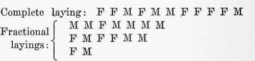

The Rhythm In The Laying
Description
This section is from the book "The Psychic Life Of Insects", by E. L. Bouvier. Also available from Amazon: The Psychic Life of Insects.
The Rhythm In The Laying
To ascertain whether or not the division of the sexes with the solitary nesting species is effected according to a rhythm, it is necessary to observe the insect in full liberty.
This is what Fabre has not failed to do, and his observations are none the less interesting because he made them with another object. But he has stated that the Osmias, when they find a place where they can effectively make their entire laying (about fifteen eggs), first construct female cells, then afterward, nearer the opening, all their male cells. A sphegid which works in dry twigs, Solenius vagus, does just this thing. So also does the Chalicodoma of the walls, which first prepares its female cells and then, after them, its male cells. Verhoeff (1892) has made identical statements in regard to a large number of wasps, some honey-bearers, and others predators.
When the female, for lack of sufficient space, must divide her laying among different lodgings, she applies the same rule, first establishing the female cells and then afterward, near the orifice, the male cells. Fabre on this point made numerous observations, of which only a few can be mentioned here. Osmia tricoma uses all sorts of places. In the bellied-out cell of the Anthophoras the dilated bottom is used to make a female cell and the narrower upper part is used for one or two male cells. A very fecund female which laid twenty-five eggs placed its laying in five fragments of reed in which she established her cells in the following manner:
Similar observations in very great number have been made by Verhoeff, who gives to this habit of the solitary nesting species the name of protero-thesis. The same rule applies to those rare species in which the male is much larger than the female and needs in consequence larger and better-provisioned cells. AntJiidium septemdenta-tum and A. bellicosum, for example, first establish a female cell in the little turns of their snail shells, then, near the orifice of the shell, a great male cell.
The division of the sexes in partial layings explains what we observe in completely finished layings in the same place. Like Fabre, Verhoeff states that the males issue before the females and that in both sexes the issuing is effected in an inverse order to that of laying. This is, without doubt, a habit acquired long ago, which became quickly fixed by natural selection, since its advantages are many. It is eminently favorable to increased reproduction and unfavorable to the overthrowing of the nidification. Issuing before the females, the males cannot couple with them, and, visiting flowers, can accommodate the females of another colony which are in a hurry to build nests; and, on the other hand, the issuing of the young individuals in an order reverse to that of the laying saves the progeny from disaster.
First reed : | 7 females | 1 male | |
Second ' ' | 3 | 3 " | |
Third " | 3 | " | 2 " |
Fourth | 1 | " | 2 " |
Fifth | 2 | 3 " | |
As to whether this precious instinct has been acquired and as to whether it has sexual polymorphism for its origin, I wish to call attention to the difference in size between the males and females to explain the distribution of the layings with the rare species, such as Osmia tridentata, where this polymorphism does not exist. According to Fabre's observations, this species distributes its eggs in identical cells, mixing the sexes,-with, however, a vague tendency to lay the male eggs nearer the orifice, and this in the complete layings as well as in the partial layings, as is shown in the following series :
These observations were made in Provence, but at Bonn in the Rhine provinces the same species has the instinct of distributing the sexes advantageously. Here are, in fact, two complete layings noted by Verhoeff in a reed inhabited by Osmia tridentata:
First series: F F F M M Second series: F F F F M M M
Even supposing that Verhoeff and Fabre mis-identified the species which they used in their observations, it must be admitted that Osmia tridentata shows all the stages between the irregular division and the advantageous division of the sexes ; and, even admitting a confusion of species, the observations of the two biologists show that advantageous distribution was progressively acquired with the Osmias. Once acquired, the instinct of advantageous distribution of the sexes must surely turn to a rhythm. Because of the labor of their nest-making the females of solitary species are not very fertile and ordinarily complete their laying in one place. They first build large cells and deposit in them all their female eggs, then devote themselves exclusively to the building of small cells and the laying of male eggs.
Continue to: